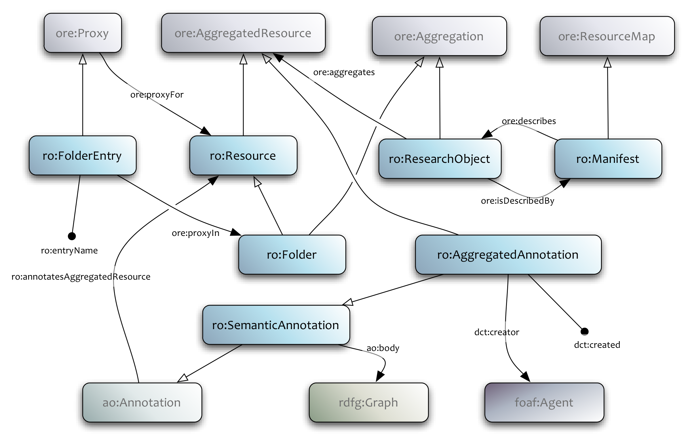
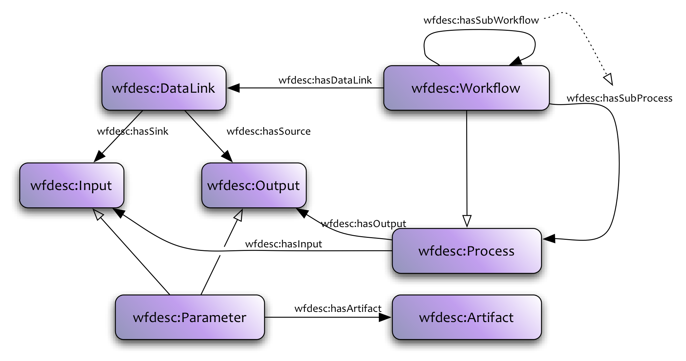
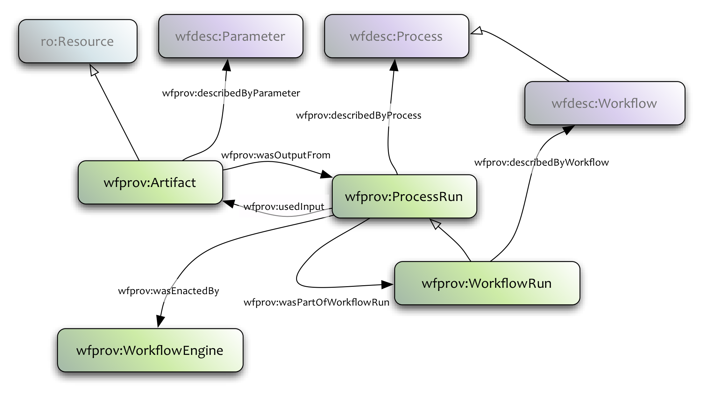
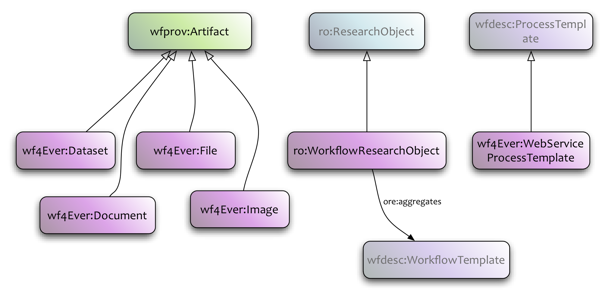

Scientific workflows are used to describe series of structured activities and computations that arise in scientific problem-solving, providing scientists from virtually any discipline with a means to specify and enact their experiments. From a computational perspective, such experiments (workflows) can be defined as directed acyclic graphs where the nodes correspond to analysis operations, which can be supplied locally or by third party web services, and where the edges specify the flow of data between those operations.
Besides being useful to describe and execute computations, workflows also allow encoding of scientific methods and know-how. Hence they are valuable objects from a scholarly point of view, for several reasons: (i) to allow assessment of the reproducability of results; (ii) to be reused by the same or by a different scientist; (iii) to be repurposed for other goals than those for which it was originally built; (iv) to validate the method that led to a new scientific insight; (v) to serve as live-tutorials, exposing how to take advantage of existing data infrastructure, etc. This follows a trend that can be observed in disciplines such as Biology and Astronomy, with other types of objects, such as databases, increasingly becoming part of the research outcomes of an individual or a group, and hence also being shared, cited, reused, versioned, etc.
Challenges for the preservation of scientific workflows in data intensive science, include: (a) the consideration of complex digital objects that comprise both their static and dynamic aspects, including workflow models, the provenance of their executions, and interconnections between workflows and related resources, (b) the provision of access, manipulation, sharing, reuse and evolution functions to these complex digital objects, (c) integral lifecycle management functions for workflows and their associated materials.
Thus the use of workflow specifications on their own does not guarantee to support reusability, shareability, reproducibility, or better understanding of scientific methods. Workflow environment tools evolve across the years, or they may even disappear. The services and tools used by the workflow may change or evolve too. Finally, the data used by the workflow may be updated or no longer available. To overcome these issues, additional information may be needed. This includes annotations to describe the operations performed by the workflow; annotations to provide details like authors, versions, citations, etc.; links to other resources, such as the provenance of the results obtained by executing the workflow, datasets used as input, etc.. Such additional annotations enable a comprehensive view of the experiment, and encourage inspection of the different elements of that experiment, providing the scientist with a picture of the strengths and weaknesses of the digital experiment in relation to decay, adaptability, stability, etc.
These richly annotation objects are what we call workflow-centric Research Objects. The notion of Research Object (as discussed in [[BECHHOFER11]]) is a general idea that aims to extend traditional publication mechanisms and take us "beyond the pdf" [[FORCE11]]]. An RO is an aggregation of resources along with annotations on those resources. The aggregation itself may also be annotated, where by annotation, we mean the association of arbitrary additional information with a resource. The Research Object thus collects together relevant resources along with annotations that enable the understanding, reuse etc. of its constituent parts. In a workflow-centric Reearch Object describing an investigation for example, annotations could describe how data sources have been used or how intermediate results were derived. Executable papers [[EXEC]] similarly aim to support validation, exploration and interaction in publication in order to support validation. Hunter [[HUNTER06]] proposes the notion of Scientific Publication Packages (SPP) to describe "the selective encapsulation of raw data, derived products, algorithms, software and textual publications". SPPs are motivated primarily by the need to create archives for the variety of artifacts produced during the course of a scientific investigation; they ideally contain data, methods, software and documents, but also their provenance as well.
The focus of Wf4Ever is on workflow preservation (and more specifically workflows supporting scientific investigation). Thus the objects that will be described using the model are inherently workflow-centric. Although the basic infrastructure (aggregation + annotation + domain vocabularies) that the RO model supports is applicable to many situations (for example the executable or enhanced publication of FORCE11), the specific vocabularies defined within the Wf4Ever RO model are intended to support those Research Objects that have workflows (methods) as their primary content.
The intention is that a Wf4Ever Research Object will aggregate information about a workflow (or collection of workflows) possibly including details of its execution trace, the data items consumed or produced by the workflow, plus provenance information about the lineage of the workflow, data items or the aggregation itself. This intention is that this information will support reproducability of the workflows, reuse of the components and, perhaps most importantly will facilitate subsequent understanding of the investigation that the workflow is intended to support. The support of "full-fat" reproducability in terms of re-execution of a process in order to produce identical results is problematic, particularly when operating in a distributed, web-service based ecosystem.
Research Objects play multiple roles. In the first case, they are technical objects. They provide access to the resources that are needed to support execution of investigations and record the provenance traces of those executions. They encapsulate dependencies between resources and maintain versioning information about the lineage and evolution of those resources.
At the same time, they are social objects. They encapsulate reusable protocols and know-how. They record best practices and support reproducability. They are citable artifacts that can be referred to and quoted. They record and represent information about the people involved in investigations -- those who create, use, extend and curate the objects.
These roles bring requirements on the representation structure and vocabularies used to describe Research Objects. This specification focuses on the technical aspects and describes the core Wf4Ever Research Object vocabularies that provide container structures and vocabulary for describing workflow objects. Additional vocabularies covering evolution, lifecycle, versioning and other social aspects will be covered elsewhere.
The Wf4Ever Research Object model consists of a suite of ontologies or vocabularies that are used to describe workflow-centric ROs. The key ontologies provided are:
ro:
Provides basic structure for the description of aggregated resources and the annotations that are made on those resources.
wfdesc:
A vocabulary for the description of workflows. This provides an abstraction that can be mapped to different particular workflow systems.
wfprov:
A vocabulary for the description of provenance information. This provides an abstraction that can be mapped to different provenance vocabularies.
The RO Model uses two existing vocabularies to provide aggregation and annotation functionality. Object Reuse and Exchange [[ORE]] is used for specifying aggregation of resources and the Annotation Ontology [[AO]] is used to represent annotations.
Each of these ontologies are described in more detail below.
A research object aggregates a number of resources that are used and/or produced in a given scientific investigation. This aggregation supports access to those collected resources – or at least access to the identification of those resources. The resources aggregated in an RO can be distributed, thus a particular user may be allowed to see the metadata associated with a resource without necessarily having access to its content. For example, dereferencing a URI which is aggregated in a Research Object may require further authentication. A research object allows for annotation of the resources aggregated in it, where by annotation we mean the general notion of decorating a resource with some additional, arbitrary information (@@NOTE: the usage of the word "aggregated" to describe the collecting of resources in the RO rather than "contained"). The aggregation provides a container within which these annotations can be asserted, allowing for the capture of context and provenance concerning those relations and annotations. Such context is needed to support, for example, measures of trust of quality.
The aggregated resources of an RO could include workflow descriptions, workflow runs, artifacts, etc. The figure below illustrates a research object described using a manifest. It also illustrates the specific class of research object named workflow research object, which refers to research objects that contain at least one workflow description.

The research object is described in the ro
ontology under the namespace
http://purl.org/wf4ever/ro#
This ontology extends the OAI-ORE ontology.
Workflow descriptions can be made using the wfdesc ontology under the namespace http://purl.org/wf4ever/wfdesc#

This ontology wfdesc describes an abstract workflow description structure, which on the top level is defined as a wfdesc:Workflow.
A wfdesc:Workflow contains several wfdesc:Process instances, associated using the wfdesc:hasSubProcess property. Each of these (and the workflow itself) wfdesc:hasInput and wfdesc:hasOutput some wfdesc:Parameter (wfdesc:Input or wfdesc:Output). An wfdesc:Artifact is associated with a wfdesc:Parameter using wfdesc:hasArtifact. The wfdesc:Workflow also wfdesc:hasDataLink several wfdesc:DataLink instances, which forms the connection between parameters. Thus this ontology allows the description a direct acyclic graph, or a dataflow.
This ontology is meant as an upper ontology for more specific workflow definitions, and as a way to express abstract workflows, which could either be hand-crafted by users ("ideal workflow description") or extracted from workflow definitions of existing workflow systems, like Taverna's .t2flow and Scufl2 formats.
The wfprov ontology shows how to link these workflow descriptions to a provenance trace of a workflow execution.

Provenance of workflow execution is described using the wfprov ontology, and is used to describe the provenance of results.

The wf4ever ontology specifies extensions that we feel are quite specific to Wf4Ever, and probably not as liable for reuse as the previous ontologies. This ontology imports all the other ontologies described on this page, and so can also be used to get a complete picture of all the Wf4Ever ontologies. The namespace is http://purl.org/wf4ever/wf4ever#
Here is an example research object containing a single workflow a_workflow.t2flow and an annotation which as been automatically added.
@base <../> . @prefix ro: <http://purl.org/wf4ever/ro#> . @prefix ao: <http://purl.org/ao/> . @prefix ore: <http://www.openarchives.org/ore/terms/> . @prefix dct: <http://purl.org/dc/terms/> . @prefix xsd: <http://www.w3.org/2001/XMLSchema#> . @prefix foaf: <http://xmlns.com/foaf/0.1/> . @prefix rdfg: <http://www.w3.org/2004/03/trix/rdfg-1/> . <.> a ro:ResearchObject, ore:Aggregation ; ore:aggregates <a_workflow.t2flow>, :ann1 ; dct:created "2011-12-02T15:01:10Z"^^xsd:dateTime ; dct:creator [ a foaf:Person; foaf:name "Stian Soiland-Reyes" ] . <a_workflow.t2flow> a ro:Resource . :proxy1 a ro:Proxy ; ore:proxyFor <a_workflow.t2flow> ; ore:proxyIn <.> ; dct:created "2011-12-02T15:02:10Z"^^xsd:dateTime ; dct:creator [ a foaf:Person; foaf:name "Stian Soiland-Reyes" ] . :ann1 a ro:Annotation, ao:GraphAnnotation ; ao:body <.ro/ann1> ; ao:annotatesResource <a_workflow.t2flow>, <.> ; dct:created "2011-12-02T15:02:13Z"^^xsd:dateTime ; dct:creator [ a foaf:Agent ; foaf:name "t2flow workflow annotation extractor" ] . <.ro/ann1> a rdfg:Graph ; dct:created "2010-05-14T12:02:12Z"^^xsd:dateTime ; dct:creator [ a foaf:Person ; foaf:name "Marco Roos" ] .
Here we can see that Stian has made a research object at 15:01:10, and at 15:02:10 he added <a_workflow.t2flow> to the research object. Note that in this case we don't know when <a_workflow.t2flow> itself was created or when. The research object also aggregates an annotation :ann1, this annotation was created by "t2flow workflow annotation extractor" a few seconds after Stian added <a_workflow.t2flow> - and indeed this is the aggregated resource which has been annotated. It also annotates the resource object itself. We have been told that the content of that annotation, <.ro/ann1>, was created by Marco more than a year earlier, which in this case makes sense because it is an annotation which the extractor has found inside the t2flow.
Resolving the annotation body gives:
@base <../> . @prefix ro: <http://purl.org/wf4ever/ro#> . @prefix wfdesc: <http://purl.org/wf4ever/wfdesc#> . @prefix wf4ever: <http://purl.org/wf4ever/wf4ever#> . @prefix foaf: <http://xmlns.com/foaf/0.1/> . @prefix ao: <http://purl.org/ao/> . @prefix dct: <http://purl.org/dc/terms/> . @prefix xsd: <http://www.w3.org/2001/XMLSchema#> . <.> a wf4ever:WorkflowResearchObject . <a_workflow.t2flow> a wfdesc:Workflow ; wfdesc:hasInput :in1 ; wfdesc:hasOutput :out1 ; wfdesc:hasDataLink [ wfdesc:hasSource :in1 ; wfdesc:hasSink :out1 ; ] ; dct:title "A workflow" ; dct:description "A workflow that directly outputs its only input" ; dct:created "2010-05-14T12:02:12Z"^^xsd:dateTime ; dct:creator [ a foaf:Person ; foaf:name "Marco Roos" ] . :in1 dct:description "Any value" . :out1 dct:description "The value given to in1" .
Inside the annotation body, which we have been told was done by Marco, we find an abstract version of the .t2flow workflow (using the wfdesc ontology) which has been extracted by the agent. This reveals some workflow annotations done by Marco in 2010; title and description on the workflow, and descriptions for the input and output ports.
The ro ontology contains ro:Folder and ro:FolderEntry which can be used to organise aggregated resourced in a folder-like structure. Folders themselves are also aggregated by the research object, and can be the target of ?annotations just like other resources. This example shows how such a folder structure could be maintained in a "checked out" research object where each aggregated resource exists as a file or folder on a local file system. For increased readability, this example represents the individual ore:ResourceMap documents as Turtle files, but these could be in formats like RDF/XML, as a single file with named graphs, like TriG, or other representations as appropriate.
Note that the actual folder structure used, in particular of the .ro/ metadata folder, is currently non-normative. If such a folder structure was exposed as a web resource, then the resource maps currently in .ro could (and perhaps even should) be resolved by content negotiation on the ro:Folder resources like <b/c/>.
See https://github.com/wf4ever/ro/tree/master/examples/folders to browse the RO folder structure of this example.
See the .ro/ folder for the RDF/Turtle resource maps describing each of these folders, in addition to the ro:Manifest for the research object itself. The filename structure and identifier scheme here is non-normative and is a suggestion only.
The RO model does not (yet) assign a name to the top-level ro:Folder, which in this example has been called <.ro/root> - although its children (<a/> etc.) are in this example organised directly within the folder structure of the Research Object. An alternative organisation might be root/ and root/a/.
The Research Object aggregates all individual resources that are organised into the folders, no matter at what folder level they have ro:FolderEntry representations. The ro:Folder instances themselves, as instances of ro:Resource - are also aggregated by the Research Object. Note that the ore:ResourceMap}}s (the {{.ttl files) would not normally be considered aggregated by the research object.
Each ore:ResourceMap (each .ttl file in this example) contains relevant links to other resource maps, as if it was a REST resource. As a minimum a resource map for a ro:Folder should contain a link to the aggregating research object's ro:Manifest, and for each ro:FolderEntry which resource is another ro:Folder, a link to its ore:ResourceMap.
In this example, the ro:Folder entries mainly correspond to the actual resource paths, for instance <b/file3.txt> has the folder entry with ro:entryName "file3", and is a proxy of the ro:Folder <b> which has the ro:entryName "b" within the root folder <.ro/root> (which is not aggregated by any ro:Folder).
There is no requirements for the entry names to match parts of the URI of the aggregated resource, this is examplified in this example where the aggregated resource {{<
>}} has folder entries both as "a/other.txt" and "b/external.txt" in this imagined "check out" of a complete research object.
Secondly, aggregated resources, even if they are ro:Resource instances, are not required to be present within an ro:Folder structure. In this RO, this is exemplified by the aggregation of another research object {{<
>}} which does not appear as an ro:FolderEntry.
Content:
| Resource | Type/description |
|---|---|
| . | ro:ResourceObject aggregating all except <.ro/*> |
| ./.ro | Research Object metadata |
| ./.ro/manifest.ttl | ro:Manifest / ore:ResourceMap describing <.> |
| ./.ro/root.ttl | ore:ResourceMap describing <.ro/root> |
| ./.ro/root | Top-level ro:Folder <.ro/root> |
| ./.ro/root/a.ttl | ore:ResourceMap describing the ro:Folder <a/> |
| ./.ro/root/b | *) |
| ./.ro/root/b.ttl | ore:ResourceMap describing <b/> |
| ./.ro/root/b/c.ttl | ore:ResourceMap describing <b/c/> |
| ./file1.txt | ro:Resource <file1.txt> |
| ./a | ro:Folder <a/>}} |
| ./a/other.txt | ro:Resource {{<
{nolink:http://www.example.com/external.txt} >}} |
| ./a/file2.txt | ro:Resource <a/file2.txt> |
| ./b | ro:Folder <b/>}} |
| ./b/external.txt | ro:Resource {{<
{nolink:http://www.example.com/external.txt} >}} |
| ./b/file3.txt | ro:Resource <b/file3.txt> |
| ./b/c | ro:Folder <b/c/> |
| ./b/c/file4.txt | ro:Resource <b/c/file4.txt> |
*) The metadata folder <.ro/root/b/> does not represent anything in the research object, and is in this example used to organize the ro:ResourceMap. If the ore:ResourceMap documents describing the ro:Folder are delivered through Content Negotiation directly on the ro:Folder resource, like <b/c/>, there might not be any need for such a metadata folder structure.
As a proof of concept, we show how a myExperiment pack can be specified using research object vocabulary. The pack used is the myExperiment Graphing and Citing Time Series Data pack, as it contains a workflow template, and is, therefore, useful for illustrating a workflow research object. This pack includes a workflow and its results. The workflow is used to extract data from the Times Series Data Library and plots it using Google charts.
The RO ontology contains individuals that allow to see what the resources aggregated within the pack are, and how their relationships can be encoded using AO annotations. The figure below illustrates the structure of the research object, which is represented by the node ro-217. This node aggregates 7 resources representing the wfdesc:Workflow, workflow-2464, the workflow run obtained by enacting such wfdesc:Workflow, workflow-run1, the artifacts used as inputs to the workflow run, external-1, external-2 and external-3, and the artifacts generated as a result of the enactment, file-576 and file-577. Additionally, the research object ro-217 aggregates 6 annotations that are used to encode the relationships between aggregated resources. Specifically, annotation-1, annotation-2 and annotation-3 are used to specify that workflow-run1 used the artifact external-1, external-2 and external-3, and annotation-4 and annotation-5 are used to specify that the artifacts file-576 and file-577 were generated by workflow-run1. Finally, annotation-6 is used to specify that workflow-run1 has as wfdesc:Workflow workflow-2464.
The RO ontologies can be found on github as OWL/Turtle format:
Other formats will be produced when these are published at their official namespace URIs.
If you are viewing these in Protege, it is recommended that you:
Note on namespaces:
Documentation: Research Object Vocabulary Specification (this page)
OWL version: https://github.com/wf4ever/ro (not yet tagged)
Documentation: Research Object Vocabulary Specification v0.1
OWL version: https://github.com/wf4ever/ro/tree/0.1 (or Download as zip)